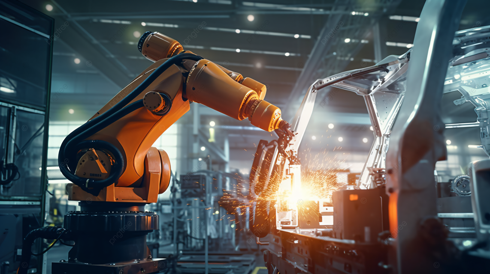
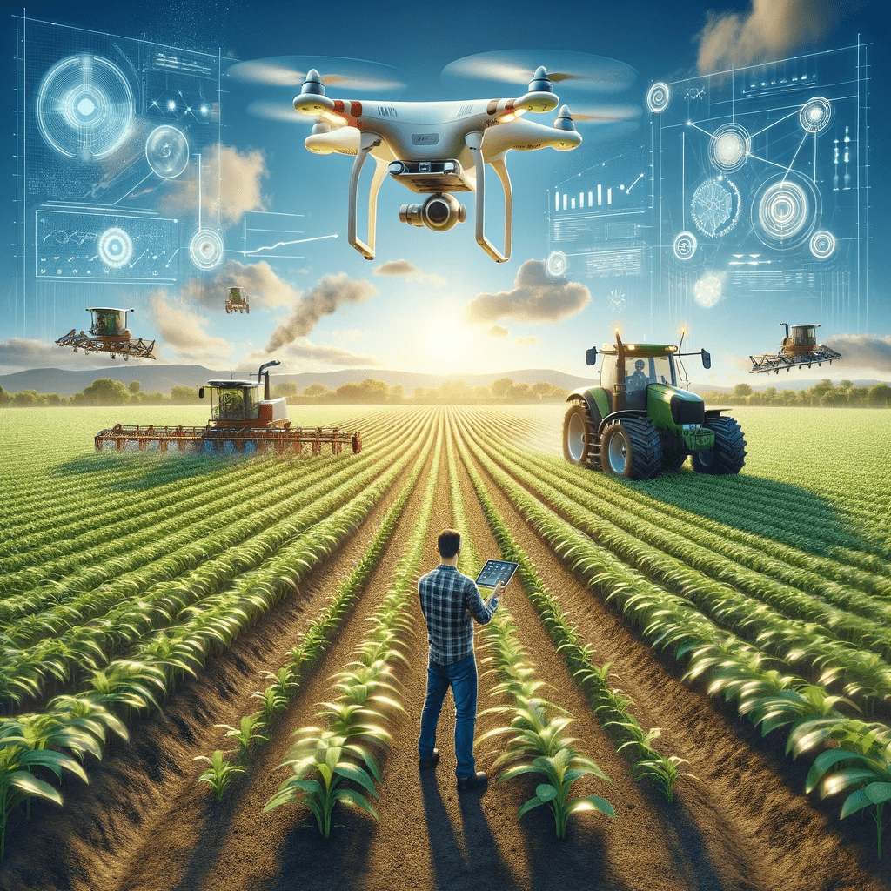

Do campo à cidade, colhendo oportunidades
Do campo à cidade, colhendo oportunidades

ㅤㅤㅤㅤㅤㅤㅤㅤㅤㅤㅤㅤㅤㅤㅤㅤㅤㅤㅤㅤㅤㅤㅤㅤㅤㅤㅤㅤㅤㅤㅤㅤㅤㅤㅤAvanços tecnológicos

A agricultura de precisão utiliza tecnologias como GPS, sensores e drones para monitorar e gerenciar as variáveis agrícolas com maior precisão. Isso permite o uso eficiente de insumos, como água, fertilizantes e defensivos agrícolas, resultando em maior produtividade e menor impacto ambiental.
Dispositivos IoT são usados para coletar dados em tempo real sobre condições do solo, clima, crescimento das plantas e saúde dos animais. Esses dados são analisados para tomar decisões mais informadas e precisas, aumentando a eficiência operacional.
A biotecnologia tem sido fundamental para o desenvolvimento de culturas geneticamente modificadas, resistentes a pragas, doenças e condições climáticas adversas. Isso tem contribuído para aumentar a produtividade e reduzir a dependência de pesticidas e herbicidas.
Máquinas autônomas e robôs estão sendo cada vez mais utilizados na agricultura brasileira. Tratores autônomos, plantadeiras e colheitadeiras estão revolucionando a forma como as atividades agrícolas são realizadas, proporcionando maior precisão e redução de custos.
O uso de Big Data e IA está transformando a tomada de decisões na agricultura. Plataformas de análise de dados ajudam a prever padrões climáticos, doenças de plantas e demandas de mercado, permitindo que os agricultores planejem e ajustem suas operações de maneira mais eficiente.
A tecnologia de irrigação inteligente utiliza sensores e algoritmos para otimizar o uso da água nas lavouras. Esses sistemas garantem que as plantas recebam a quantidade certa de água no momento certo, economizando recursos hídricos e aumentando a produtividade.
Plataformas digitais estão facilitando o comércio de produtos agrícolas, conectando diretamente agricultores a consumidores e mercados. Isso elimina intermediários, aumenta a transparência dos preços e melhora a rentabilidade dos produtores.
O blockchain está sendo utilizado para rastrear a origem e o percurso dos produtos agrícolas, aumentando a transparência e a segurança alimentar. Isso também ajuda a construir a confiança do consumidor nos produtos agrícolas brasileiros.
